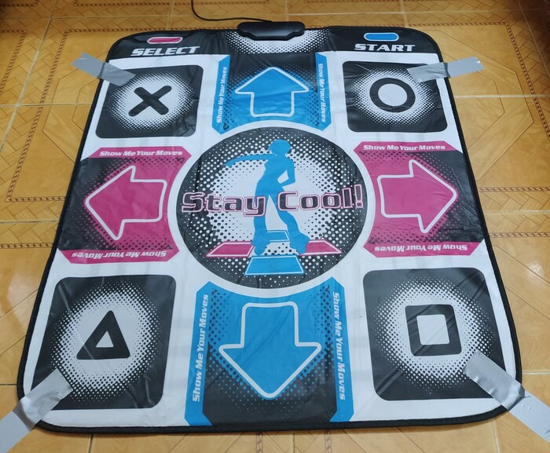
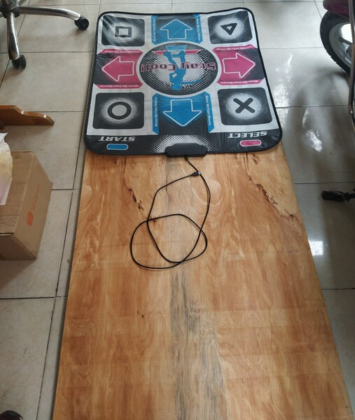
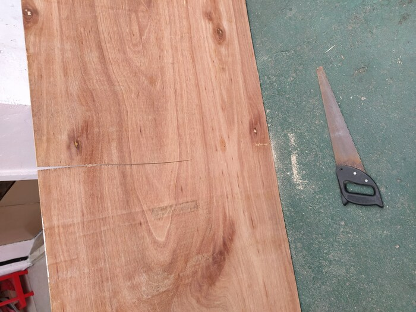
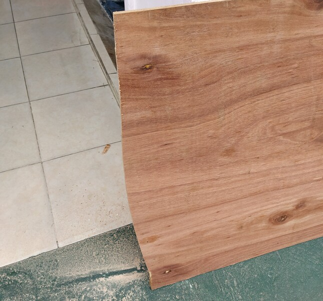
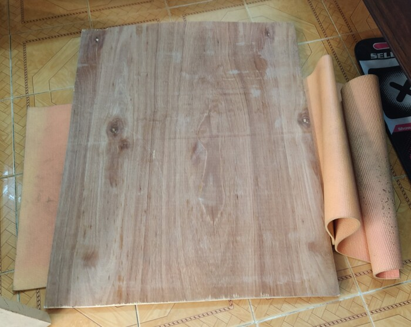
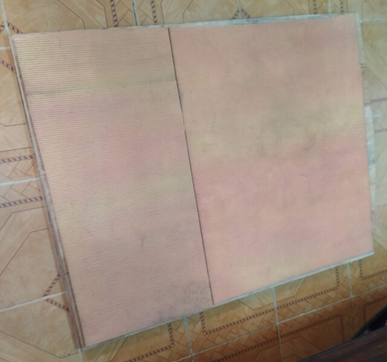
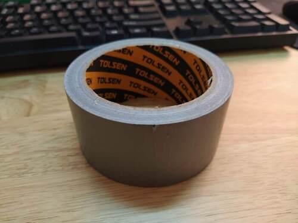
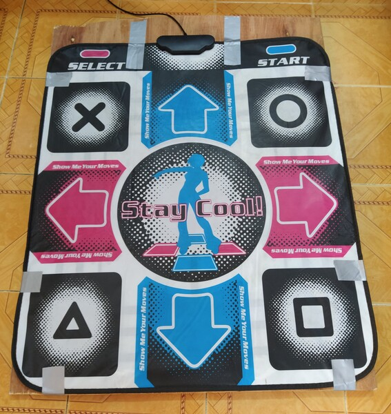

Simplest possible stepmania soft-to-hard pad mod
I’ve been playing Stepmania on and off for years now, but only recently tried taping the soft dancepad to the floor. It blew my mind how much better it felt, since I no longer had to worry about the pad sliding or curling up:

However, taping & untaping every time I play is too much of a hurdle (and I want zero friction for my cardio sessions). Therefore, the hard pad mod.
Of course people on the internet have done this a gazillion times, such as this one or this one. Those guys did way more fiddly stuff that I personally don’t need though, such as putting thick vinyl under each button for better feedback, or covering the whole top with more vinyl. My plan is simple: cut out a piece of plywood, double-sided-tape the bottom with a yoga mat for slip protection, then tape the softpad on top.
Luckily, my uncle had a spare piece of plywood that somehow had the perfect width:

So my job is sawing one single line. How hard could it be?

Turns out, the saw was blunt, and my sawing technique was so bad (read: non-existent) so the cut keeps leaning to the right. Since I had no idea how to fix it, I just continued until the halfway point then flipped the whole thing over, hoping that at least my right-leaning sawing was consistent.

What do you know, it worked!
Since I also had an old unused yoga mat, I checked how well it worked as a non-slip solution:

Then cut it into shape and slapped on some double tape. The board itself was heavy enough so just putting it on top of the mat was enough to make it stay in place, so the tape’s only job was to keep the mat from falling off whenever I need to pick up & move the whole thing around.

Finally, taping the soft pad on the other side. I used this roll that I bought from the nearby Emart, which was hand-tearable, so I could work without scissors, and also easily removable, just in case I need to replace the soft pad in the future:

And with that, we’ve got the end product. It ain’t pretty, but it works. Very well at that. A nice bonus that I didn’t expect is that thanks to the mat underneath, the board just feels softer, therefore more comfortable, to step on.

I know serious DDR enthusiasts will scoff at the idea of using a soft pad at all, but really I’m just a fat dude trying to lose weight and have fun in the process, not trying to impress anyone in the Stamina Nation Discord or whatever. With that use case, I think this specific setup offers the best bang-for-your-buck, considering how even the lowest tiers of premade hard pads sell for exorbitant prices (and that’s before shipping, if they even ship to Vietnam at all), and DIY-ing a hard pad from scratch is way more effort.
Between this and working through the comet book, I think I’ll keep myself entertained enough during Saigon’s potential second COVID-19 lockdown. I’d prefer it didn’t happen though.
P/s here it is in action:
(man I wonder if we’ll ever get a Melty Blood 2)
Hot damn they’re actually doing it!